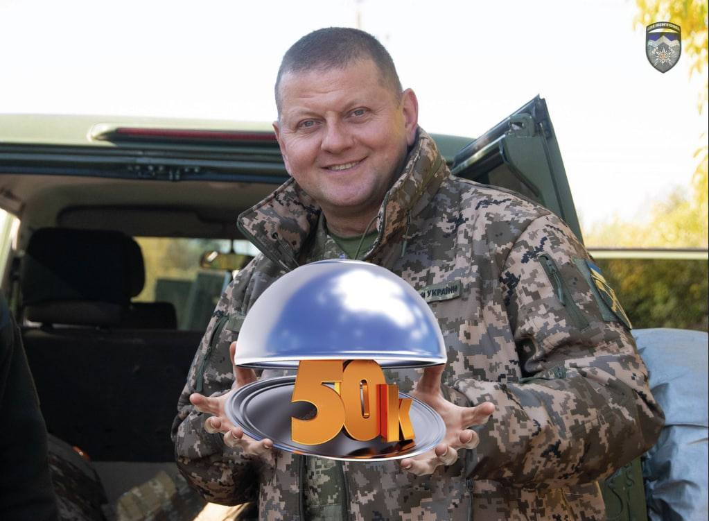

Слава Україні!
Розпочалася сто дев'яносто п'ята доба героїчного протистояння Української нації російському воєнному вторгненню.
Орієнтовні втрати противника протягом 24.02-06.09.2022
- ЛІКВІДОВАНО ОСОБОВОГО СКЛАДУ ≈ 50150 +350
- ТАНКІВ ≈ 2077 +9
- БОЙОВИХ БРОНЬОВАНИХ МАШИН ≈ 4484 +25
- АРТИЛЕРІЙСЬКИХ СИСТЕМ / РСЗВ ≈ 1179/296 +22/2
- ЗАСОБИ ППО ≈ 156
- ЛІТАКІВ / ГЕЛІКОПТЕРІВ ≈ 236/207 +0/1
- БПЛА ОПЕРАТИВНО ТАКТИЧНОГО РІВНЯ ≈ 876 +9
- КРИЛАТІ РАКЕТИ ≈ 209 +4
- КОРАБЛІ / КАТЕРИ ≈ 15
- АВТОМОБІЛЬНА ТЕХНІКА ТА ЦИСТЕРНИ З ПММ ≈ 3305 +19
- СПЕЦІАЛЬНА ТЕХНІКА ≈ 109 +2
У зв'язку з ювілеєм головнокомандувач ЗСУ Валерій Залужний оригінально привітав народ України:
Зберігається загроза масованих авіаційних та ракетних ударів по об'єктах військової та цивільної інфраструктури на всій території України.
В акваторії Чорного моря в готовності до застосування продовжують перебувати носії крилатих ракет морського базування "Калібр" противника.
Противник продовжує зосереджувати зусилля на встановленні повного контролю над територією Донецької області, утриманні тимчасово захоплених районів Херсонської, частини Харківської, Запорізької та Миколаївської областей.
Вцілому, за минулу добу, противник завдав 3 ракетних та понад 35 авіаційних ударів, здійснив близько 50 обстрілів з реактивних систем залпового вогню. Ніч з 5-го на 6-те вересня російські окупанти почали з підступних ракетних ударів по цивільних об'єктах у містах Бахмуті та Костянтинівці.
Противник завдав авіаційних ударів по районах населених пунктів Байрак і Асіївка Харківської області; Пришиб, Времівка, Велика Новосілка, Новомихайлівка, Новопіль Донецької області, Полтавка і Ольгівське Запорізької області, Біла Криниця, Білогірка і Костромка Херсонської області та Велике Артакове, Тернівка і Любомирівка Миколаївської області.
Оперативна інформація на основних напрямках:
- На Волинському та Поліському напрямках обстановка без суттєвих змін.
- на Сіверському напрямку обстрілів зазнали райони населених пунктів:
- Хрінівка Чернігівської області
- Нова Гута, Сопич, Миропілля Сумської області;
- на Харківському напрямку – Уди, Соснівка, Світличне, Золочів, Прудянка, Великі Проходи, Нове, Питомник, Руська Лозова, Руські Тишки, Петрівка, Костянтинівка, Пришиб, Гусарівка та Чепіль;
- на Бахмутському напрямку – Роздолівка, Білогорівка, Яковлівка, Соледар, Бахмутське, Бахмут, Григорівка, Весела Долина, Одрадівка, Зайцеве, Нью-Йорк, Юр'ївка, Опитне, Веселе та Майорськ
- на Авдіївському напрямку – Авдіївка, Опитне, Первомайське і Мар'їнка; на Новопавлівському напрямку – Времівка, Велика Новосілка, Нескучне, Шахтарське, Новомихайлівка, Золота Нива, Пречистівка, Вугледар, Павлівка, Костянтинівка;
- на Запорізькому напрямку – Зелене Поле, Времівка, Ольгівське, Полтавка, Залізничне, Червоне, Гуляйпільське, Дорожнянка, Новоданилівка та Білогір'я.
- на Південнобузькому напрямку – Миколаїв, Новогригорівка, Яковлівка, Партизанське, Квітневе, Киселівка, Шевченкове, Тернові Поди, Правдине, Любомирівка, Степова Долина, Таврійське, Мирне, Степове, Новоолександрівка, Первомайське, Кобзарці, Петрівка, Зарічне, Іванівка, Токареве, Ольгине та Широке.
Ворог продовжує вчиняти протиправні дії та розміщує особовий склад і військову техніку у дитячих садках (Верхній Рогачик), храмах московського патріархату (Червоний Маяк) в Херсонській області, а також використовує Святотроїцький храм у Малій Комишувасі Харківської області, як польовий шпиталь.
Сили оборони продовжують ведення оборонної операції, утримують визначені рубежі та не допускають просування противника вглиб території України.
Наші захисники успішно відбили спроби наступу ворога в районах Соледара, Зайцевого, Шахти Бутівка та Спартака.
Угруповання Повітряних Сил Збройних Сил України продовжує відбивати ракетні та авіаційні удари противника, ефективно здійснює прикриття критичних об'єктів на території України. Силами протиповітряної оборони збито керовану крилату ракету над Миколаївською областю.
Протягом минулої доби, для підтримки дій наземних угруповань, авіація Сил оборони завдала понад 30 ударів, спрямованих на ураження живої сили, бойової та спеціальної техніки, а також інших військових об'єктів ворога.
Ракетні війська та артилерія продовжують виконувати завдання з контрбатарейної боротьби, порушення системи управління, логістичного забезпечення, знищення засобів протиповітряної оборони, вогневих засобів та живої сили противника.
В результаті злагодженої роботи авіації та артилерії вражено декілька взводних опорних пунктів, близько 5 позицій зенітних ракетних комплексів та артилерійську батарею противника. Втрати противника уточнюються.